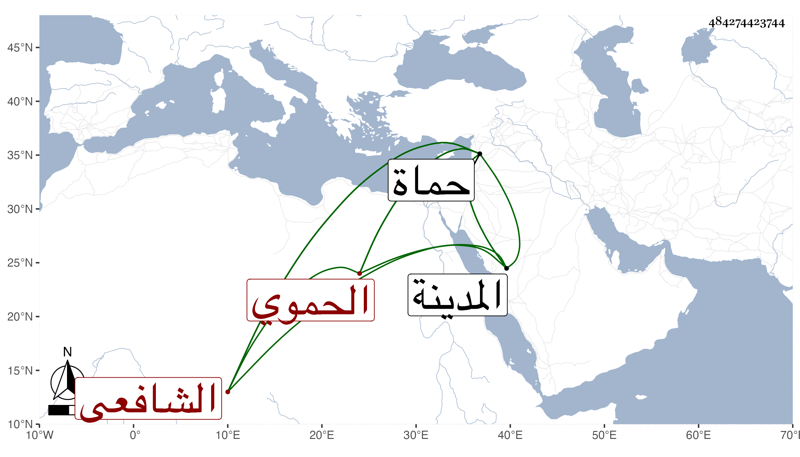

0902Sakhawi.DawLamic.ITO20230111-ara1.EIS1600.484274423744
Biography ID: 484274423744
1181
يوسف بن الحسن بن محمد بن الحسن بن مسعود بن علي بن عبد الله الجمال أبو المحاسن الحموي الشافعي ويعرف بابن خطيب المنصورية . ولد في ثالث عشر ذي الحجة سنة سبع وثلاثين وسبعمائة واشتغل بحماة وغيرها وأخذ الأصلين عن البهاء الأخميمي والفقه عن التقي الحمصي والتاج السبكي والجمال بن الشريشي والصدر بن الخابوري والنحو واللغة والفرائض والحساب والبيان عن السري أبي الوليد إسماعيل بن محمد بن محمد بن هانئ اللخمي المالكي وعليه سمع الموطأ وغيره. ودأب وحصل وكان عالما مفننا حاذقا عارفا بالفقه وأصوله والبيان والتفسير والنحو وغيرها يحفظ تائية ابن الفارض وينشد منها كثيرا وجملة من أشعار العرب ، درس وأفتى وعمل الاهتمام في شرح أحاديث الأحكام في نحو ست مجلدات كبار أو خمسة وشرح فرائض المنهاج الفرعي في مجلد وألفية ابن معطي وله نظم حسن وشهرة ببلده وغيرها ودرس بالعصرونية بحماة وانتفع به جماعة وممن أخذ عنه ابن المغلي وابن خطيب الناصرية وابن البارزي ، وانتهت إليه مشيخة العلم بالبلاد الشمالية ورحل الناس إليه ، وكان خيرا ساكنا قال ابن حجي فاق الأقران ، وقال شيخنا في إنبائه تبعا لغيره جد ودأب وحصل إلى أن تميز ومهر وفاق أقرانه في العربية وغيرها من العلوم وشرح الاهتمام مختصر الإلمام في ست مجلدات كتبت عن العلاء بن خطيب الناصرية عنه قصيدة دالية نبوية . قلت أوردها العلاء في ترجمته من تاريخه وهي طويلة أولها :
| أيعذل المستهام المغرم الصادي | إذا حدا باسم سكان الحمى الحادي |
| لا تنكروا وجد معشوق أضر به | بعد وقد قرب البادي من النادي |
| إذا تعارفت الأرواح وائتلفت | فلا يضر تناء بين أجساد |
| هذي رياح الرضى بالوصل قد عصفت | وكوكب السعد في أفق السنا باد |
وقال شيخنا في معجمه له مؤلفات عديدة وتلامذة كثيرة ونظم جيد أنشدني عنه العلاء قصيدة مليحة نظمها لما حج وزار المدينة أجاز لي في استدعاء الصرخدي . وكانت وفاته بحماة في شوال سنة تسع ودفن بظاهرها من جهة القبلة رحمه الله وإيانا .
